Project1
Table of Contents
- 1. Airbnb
- 2. Apartment rental offers in Germany
1. Airbnb
1.1. import libraries
import warnings import pandas as pd from scipy.stats import shapiro, pearsonr, ttest_rel import numpy as np import matplotlib.pyplot as plt import seaborn as sns from sklearn.linear_model import LinearRegression from sklearn.model_selection import train_test_split from sklearn.metrics import r2_score from genderize import Genderize
1.2. config packages
warnings.filterwarnings("ignore") #pd.set_option("display.max_columns", None) #pd.set_option("display.max_rows", None)
1.3. read data
- read data from csv with pandas package
raw_data = pd.read_csv('AB_NYC_2019.csv') print(raw_data.head()) print(raw_data.info())
id name host_id host_name neighbourhood_group neighbourhood ... minimum_nights number_of_reviews last_review reviews_per_month calculated_host_listings_count availability_365
0 2539 Clean & quiet apt home by the park 2787 John Brooklyn Kensington ... 1 9 2018-10-19 0.21 6 365
1 2595 Skylit Midtown Castle 2845 Jennifer Manhattan Midtown ... 1 45 2019-05-21 0.38 2 355
2 3647 THE VILLAGE OF HARLEM....NEW YORK ! 4632 Elisabeth Manhattan Harlem ... 3 0 NaN NaN 1 365
3 3831 Cozy Entire Floor of Brownstone 4869 LisaRoxanne Brooklyn Clinton Hill ... 1 270 2019-07-05 4.64 1 194
4 5022 Entire Apt: Spacious Studio/Loft by central park 7192 Laura Manhattan East Harlem ... 10 9 2018-11-19 0.10 1 0
[5 rows x 16 columns]
<class 'pandas.core.frame.DataFrame'>
RangeIndex: 48895 entries, 0 to 48894
Data columns (total 16 columns):
# Column Non-Null Count Dtype
--- ------ -------------- -----
0 id 48895 non-null int64
1 name 48879 non-null object
2 host_id 48895 non-null int64
3 host_name 48874 non-null object
4 neighbourhood_group 48895 non-null object
5 neighbourhood 48895 non-null object
6 latitude 48895 non-null float64
7 longitude 48895 non-null float64
8 room_type 48895 non-null object
9 price 48895 non-null int64
10 minimum_nights 48895 non-null int64
11 number_of_reviews 48895 non-null int64
12 last_review 38843 non-null object
13 reviews_per_month 38843 non-null float64
14 calculated_host_listings_count 48895 non-null int64
15 availability_365 48895 non-null int64
dtypes: float64(3), int64(7), object(6)
memory usage: 6.0+ MB
None
1.4. handling missing values
- there is 4 series that contain missing values
raw_data.isnull().sum()
id 0 name 16 host_id 0 host_name 21 neighbourhood_group 0 neighbourhood 0 latitude 0 longitude 0 room_type 0 price 0 minimum_nights 0 number_of_reviews 0 last_review 10052 reviews_per_month 10052 calculated_host_listings_count 0 availability_365 0 dtype: int64
1.4.1. name
- right now we will not use this feature , we can drop it , or set it to 0.
print(raw_data.name.describe())
count 48879 unique 47905 top Hillside Hotel freq 18 Name: name, dtype: object
1.4.2. host name
- this feature will be used to predict gender of host so we will keep it for now and fillna with 0, also we can use the value 0 for this feature to see if rows that don’t have name can have any effect on reviews.
print(raw_data.host_name.describe())
count 48874 unique 11452 top Michael freq 417 Name: host_name, dtype: object
1.4.3. last review
- if we don’t have any last review we don’t have any reviews at all. so we will keep this feature and fill it with 0.
print(raw_data.last_review.describe())
count 38843 unique 1764 top 2019-06-23 freq 1413 Name: last_review, dtype: object
1.4.4. reviews per month
- we have same number of missing value in last review and reviews per month , so any row that doesn’t have any last review should have null value for reviews per month, like last review we will fill it with 0.
print(raw_data.reviews_per_month.describe()) mask = (raw_data.reviews_per_month.isnull()) print(raw_data[mask])
count 38843.000000
mean 1.373221
std 1.680442
min 0.010000
25% 0.190000
50% 0.720000
75% 2.020000
max 58.500000
Name: reviews_per_month, dtype: float64
id name host_id host_name neighbourhood_group ... number_of_reviews last_review reviews_per_month calculated_host_listings_count availability_365
2 3647 THE VILLAGE OF HARLEM....NEW YORK ! 4632 Elisabeth Manhattan ... 0 NaN NaN 1 365
19 7750 Huge 2 BR Upper East Cental Park 17985 Sing Manhattan ... 0 NaN NaN 2 249
26 8700 Magnifique Suite au N de Manhattan - vue Cloitres 26394 Claude & Sophie Manhattan ... 0 NaN NaN 1 0
36 11452 Clean and Quiet in Brooklyn 7355 Vt Brooklyn ... 0 NaN NaN 1 365
38 11943 Country space in the city 45445 Harriet Brooklyn ... 0 NaN NaN 1 365
... ... ... ... ... ... ... ... ... ... ... ...
48890 36484665 Charming one bedroom - newly renovated rowhouse 8232441 Sabrina Brooklyn ... 0 NaN NaN 2 9
48891 36485057 Affordable room in Bushwick/East Williamsburg 6570630 Marisol Brooklyn ... 0 NaN NaN 2 36
48892 36485431 Sunny Studio at Historical Neighborhood 23492952 Ilgar & Aysel Manhattan ... 0 NaN NaN 1 27
48893 36485609 43rd St. Time Square-cozy single bed 30985759 Taz Manhattan ... 0 NaN NaN 6 2
48894 36487245 Trendy duplex in the very heart of Hell's Kitchen 68119814 Christophe Manhattan ... 0 NaN NaN 1 23
[10052 rows x 16 columns]
1.4.5. fill missing values with 0
data = raw_data.fillna({'reviews_per_month':0, 'last_review':0, 'name':0, 'host_name':0}) data.isnull().sum()
id 0 name 0 host_id 0 host_name 0 neighbourhood_group 0 neighbourhood 0 latitude 0 longitude 0 room_type 0 price 0 minimum_nights 0 number_of_reviews 0 last_review 0 reviews_per_month 0 calculated_host_listings_count 0 availability_365 0 dtype: int64
1.5. Clean duplicates
- remove duplicates from dataset
print(raw_data.duplicated().sum()) raw_data.drop_duplicates(inplace=True)
0
1.6. Get Correlation between data
raw_data.columns
Index(['id', 'name', 'host_id', 'host_name', 'neighbourhood_group',
'neighbourhood', 'latitude', 'longitude', 'room_type', 'price',
'minimum_nights', 'number_of_reviews', 'last_review',
'reviews_per_month', 'calculated_host_listings_count',
'availability_365'],
dtype='object')
plt.clf() corr = raw_data.corr(method='kendall') plt.figure(figsize=(15,15)) corr_fname = 'img/correlation.png' sns_plot = sns.heatmap(corr, annot=True) plt.savefig(corr_fname) corr_fname
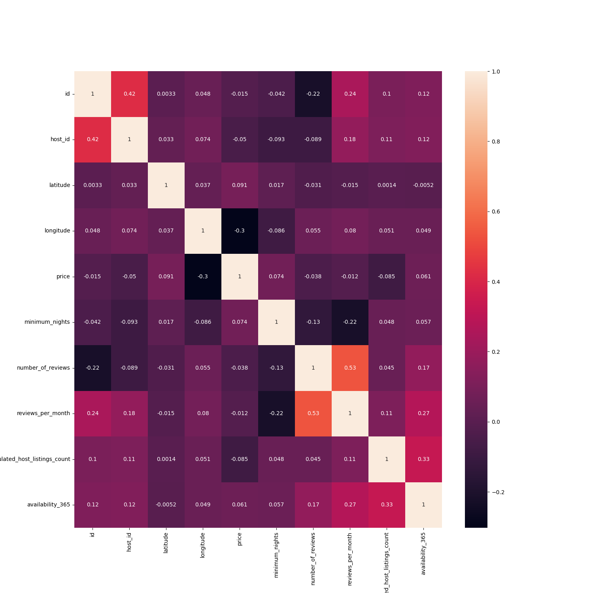
1.7. Handle Outliers
- there is no model for training so will not drop any data unless for training model , so before training outliers will be droped for now we will just check them and plot them.
1.7.1. price
- let’s check the price data and see the results
plt.clf() plt.hist(data.price, bins=100) price_hist_plot = plt.plot() price_hist_fname = 'img/raw_price_hist.png' plt.savefig(price_hist_fname) price_hist_fname
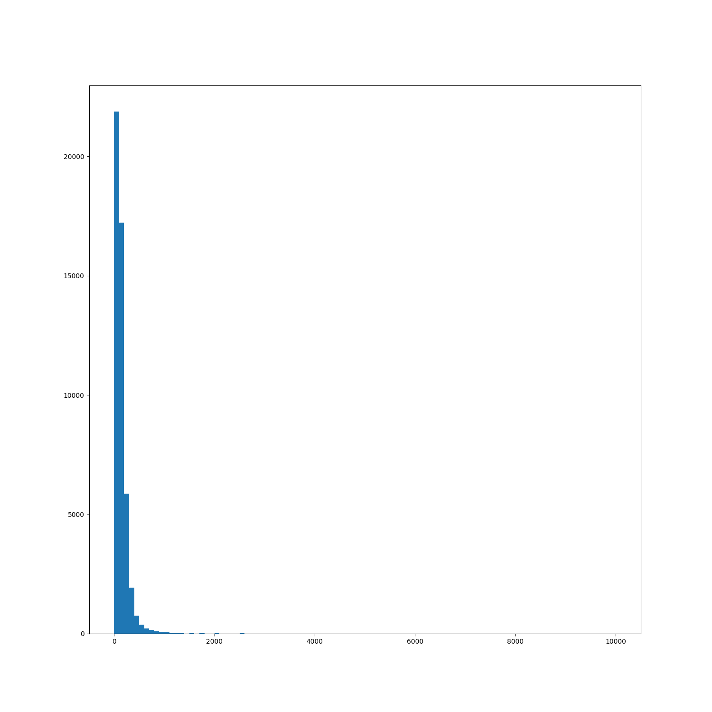
data_price_len = len(data.price) lower_price_mask = (data.price <= 10) low_price_len = len(data[lower_price_mask]) print("number of lower price mask", (low_price_len/data_price_len) * 100) upper_price_mask = (data.price >= 500) upper_price_len = len(data[upper_price_mask]) print("number of upper price mask", (upper_price_len/data_price_len) * 100) filtered_price_data_upper_mask = (data.price < 500) filtered_price_data_lower_mask = (data.price > 10) filtered_price_mask = filtered_price_data_upper_mask & filtered_price_data_lower_mask filtered_price_data = (data[filtered_price_mask])
number of lower price mask 0.0572655690765927 number of upper price mask 2.5258206360568565
- there is 0.06% of data bellow 10$ and 2.52% of data price more than 500$ let’s see histogram for filtered price data and raw price data.
plt.clf() plt.hist(filtered_price_data.price, ) filtered_price_hist_plot = plt.plot() filtered_price_hist_fname = 'img/filtered_price_hist.png' plt.savefig(filtered_price_hist_fname) filtered_price_hist_fname
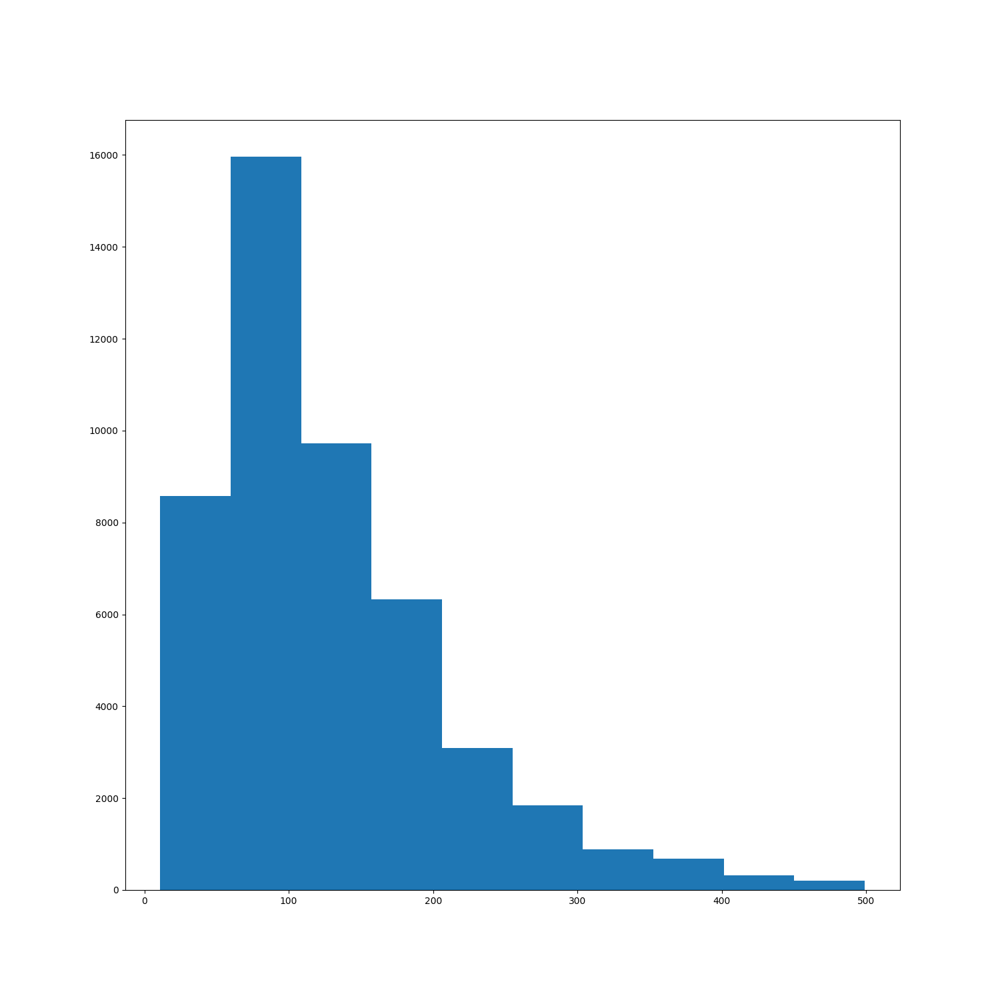
1.7.2. minimum nights
- lets plot minimum nights data and check it.
plt.clf() plt.hist(data.minimum_nights) minimum_nights_plot = plt.plot() minimum_nights_plot_fname = 'img/minimum_nights_plot.png' plt.savefig(minimum_nights_plot_fname) minimum_nights_plot_fname
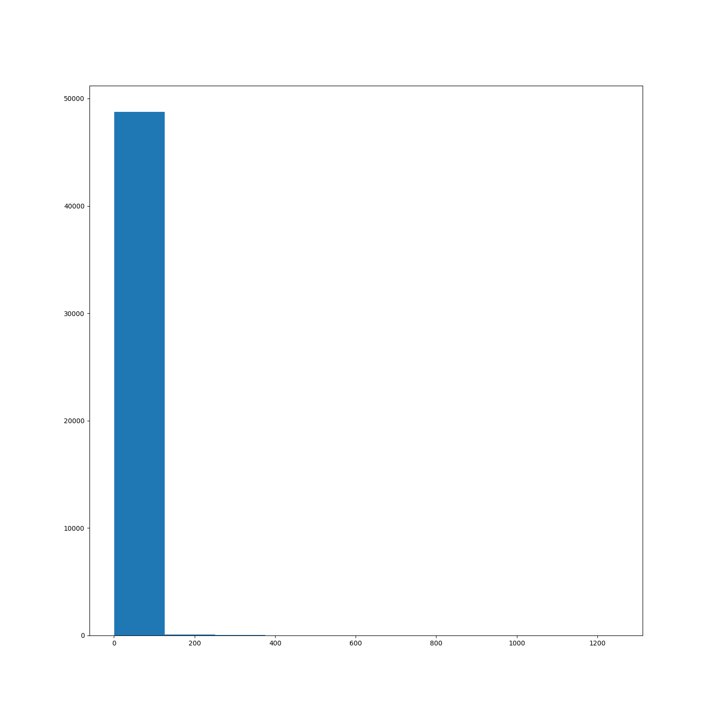
data_minimum_nights_len = len(data.minimum_nights) lower_minimum_nights_mask = (data.minimum_nights > 30) lower_minimum_nights_len = len(data[lower_minimum_nights_mask]) print("number of upper minimum nights mask upper than 30", (lower_minimum_nights_len/data_minimum_nights_len) * 100,"%")
number of upper minimum nights mask upper than 30 1.5277635750076695 %
filtered_minimum_nights_mask = (data.minimum_nights <= 30) filtered_minimum_nights_data = (data[filtered_minimum_nights_mask]) plt.clf() plt.hist(filtered_minimum_nights_data.minimum_nights, bins=5) filtered_minimum_nights_plot = plt.plot() filtered_minimum_nights_plot_fname = 'img/filtered_minimum_nights_plot.png' plt.savefig(filtered_minimum_nights_plot_fname) filtered_minimum_nights_plot_fname
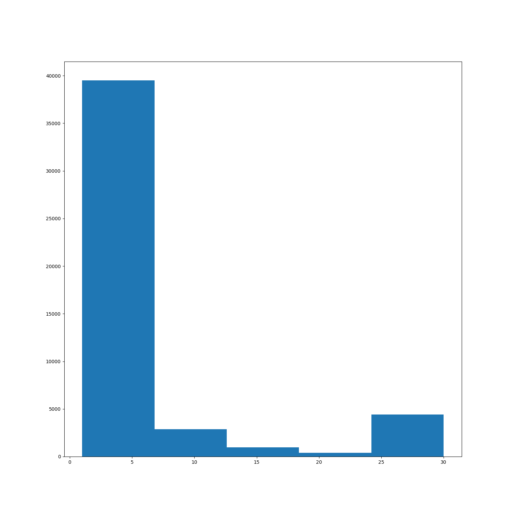
1.8. Visual data
1.8.1. neighbourhood group
print(data.neighbourhood_group.value_counts()/len(data) * 100)
Manhattan 44.301053 Brooklyn 41.116679 Queens 11.588097 Bronx 2.231312 Staten Island 0.762859 Name: neighbourhood_group, dtype: float64
plt.clf() plt.hist(data.neighbourhood_group) neighbourhood_group_plot_fname = 'img/neighbourhood_group_plot.png' plt.savefig(neighbourhood_group_plot_fname) neighbourhood_group_plot_fname
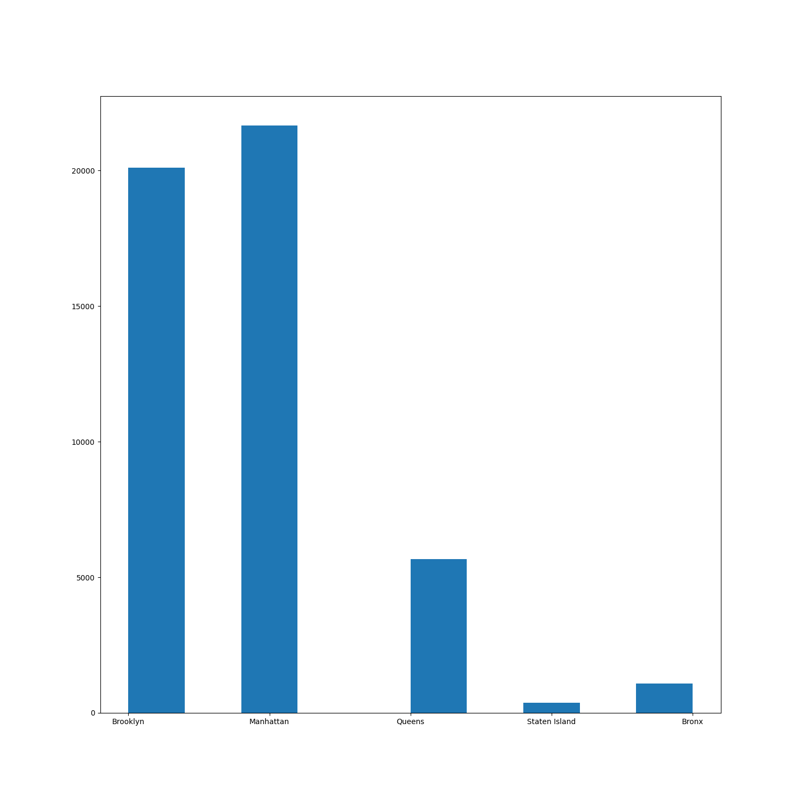
plt.clf() sns.scatterplot(data.longitude, data.latitude, hue=data.neighbourhood_group) neighbourhood_group_location_plot_fname = 'img/neighbourhood_group_location_plot.png' plt.savefig(neighbourhood_group_location_plot_fname) neighbourhood_group_location_plot_fname
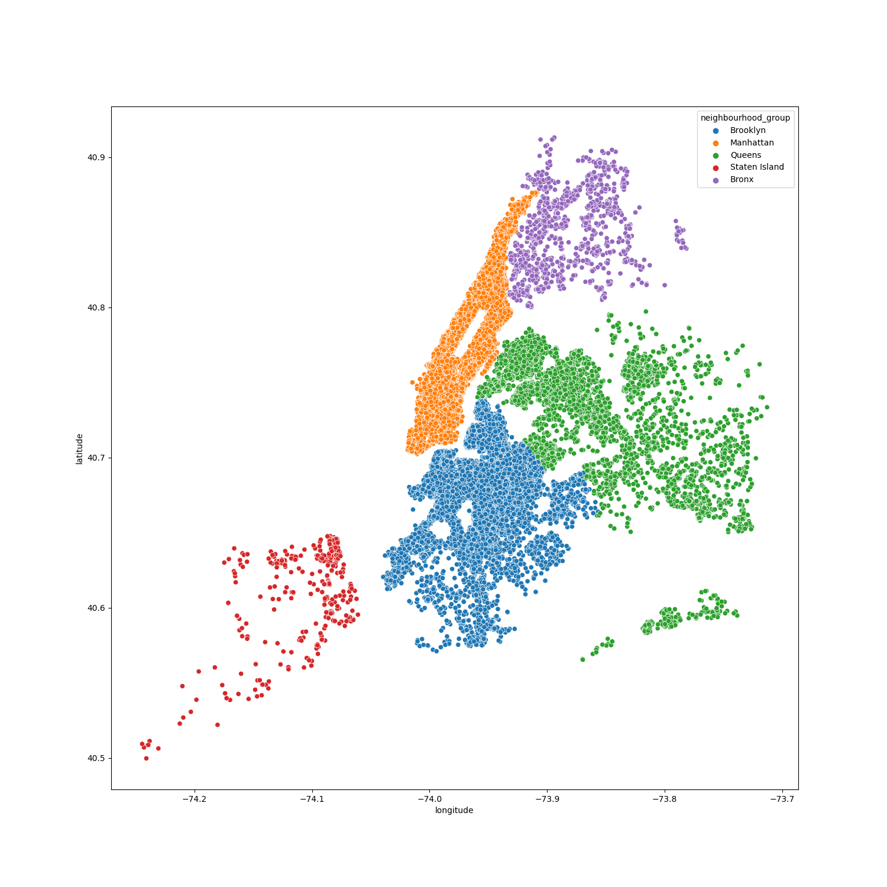
1.8.2. neighbourhood
data.neighbourhood.value_counts()/len(data.neighbourhood)*100
Williamsburg 8.017180
Bedford-Stuyvesant 7.595869
Harlem 5.436139
Bushwick 5.041415
Upper West Side 4.031087
...
Fort Wadsworth 0.002045
Richmondtown 0.002045
New Dorp 0.002045
Rossville 0.002045
Willowbrook 0.002045
Name: neighbourhood, Length: 221, dtype: float64
plt.clf() plt.figure(figsize=(15,15)) sns.scatterplot(data.longitude,data.latitude,hue=data.neighbourhood) neighbourhood_location_plot_fname = 'img/neighbourhood_location_plot.png' plt.savefig(neighbourhood_location_plot_fname) neighbourhood_location_plot_fname
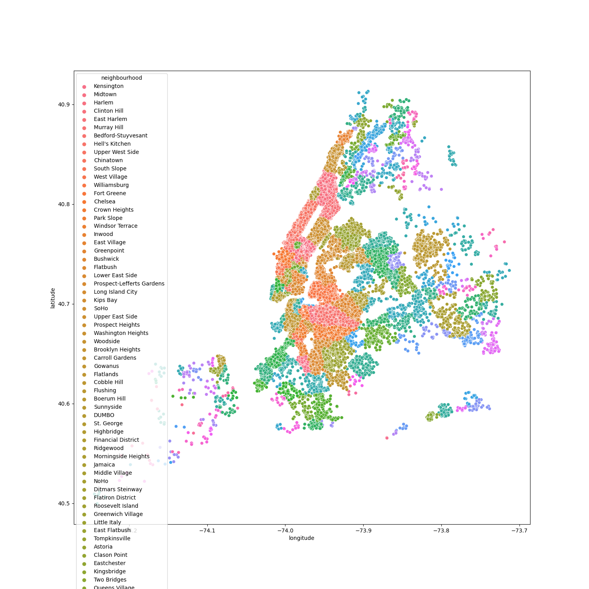
1.8.3. room type
plt.clf() sns.scatterplot(data.longitude,data.latitude,hue=data.room_type) room_type_location_plot_fname = 'img/room_type_location_plot.png' plt.savefig(room_type_location_plot_fname) room_type_location_plot_fname
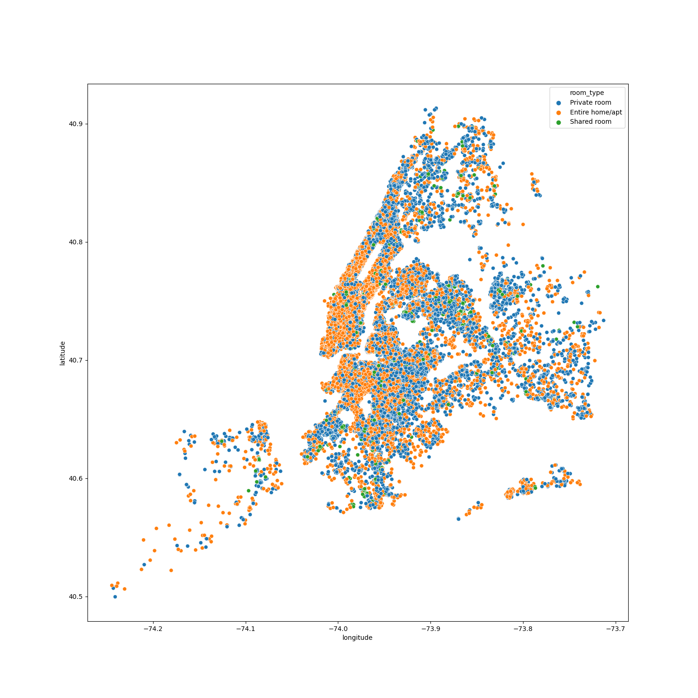
plt.clf() plt.hist(data.room_type) room_type_hist_plot_fname = 'img/room_type_hist_plot.png' plt.savefig(room_type_hist_plot_fname) room_type_hist_plot_fname
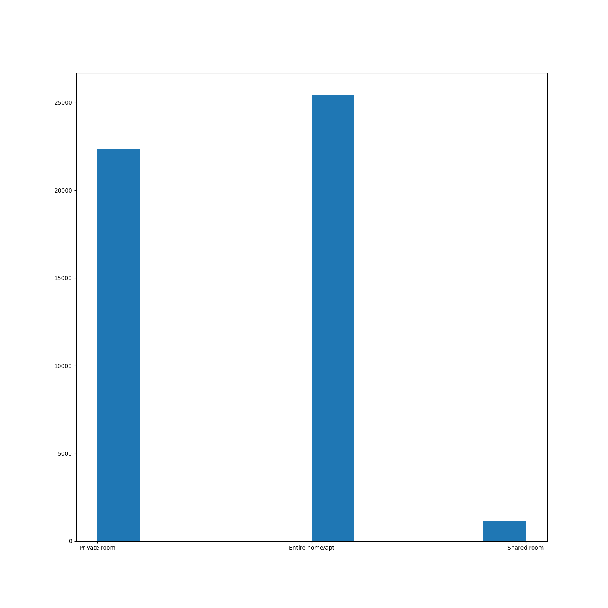
print(data.room_type.value_counts()/len(data.room_type)*100)
Entire home/apt 51.966459 Private room 45.661111 Shared room 2.372431 Name: room_type, dtype: float64
plt.clf() sns.countplot(data = data, x = 'room_type', hue = 'neighbourhood_group') room_type_on_neighbourhood_groups_fname = 'img/room_type_on_neighbourhood_groups.png' plt.savefig(room_type_on_neighbourhood_groups_fname) room_type_on_neighbourhood_groups_fname
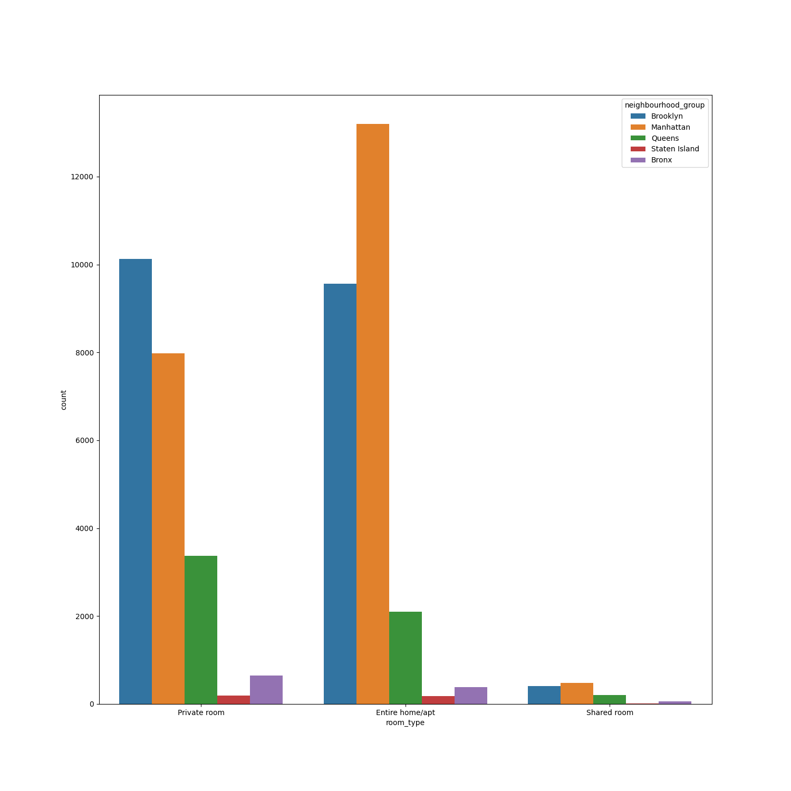
1.8.4. availability 365
plt.clf() sns.scatterplot(data.longitude,data.latitude,hue=data.availability_365) availability_365_location_plot_fname = 'img/availability_365_location_plot.png' plt.savefig(availability_365_location_plot_fname) availability_365_location_plot_fname

1.9. Analysis hosts
top_hosts = data.host_id.value_counts().head(20) top_hosts_data = data[data.host_id.isin(top_hosts.index)] top_hosts_data.host_id = top_hosts_data.host_id.apply(str)
plt.clf() plt.figure(figsize=(25,15)) sns.barplot(x = top_hosts.index, y = top_hosts.values) top_hosts_plot_fname = 'img/top_hosts_plot.png' plt.savefig(top_hosts_plot_fname) top_hosts_plot_fname
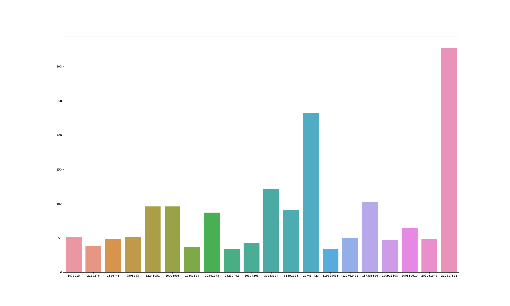
plt.clf() plt.figure(figsize=(15,15)) sns.scatterplot(top_hosts_data.longitude,top_hosts_data.latitude,hue=top_hosts_data.host_id, style=top_hosts_data.neighbourhood_group ) top_host_id_location_plot_fname = 'img/top_host_id_location_plot.png' plt.savefig(top_host_id_location_plot_fname) top_host_id_location_plot_fname
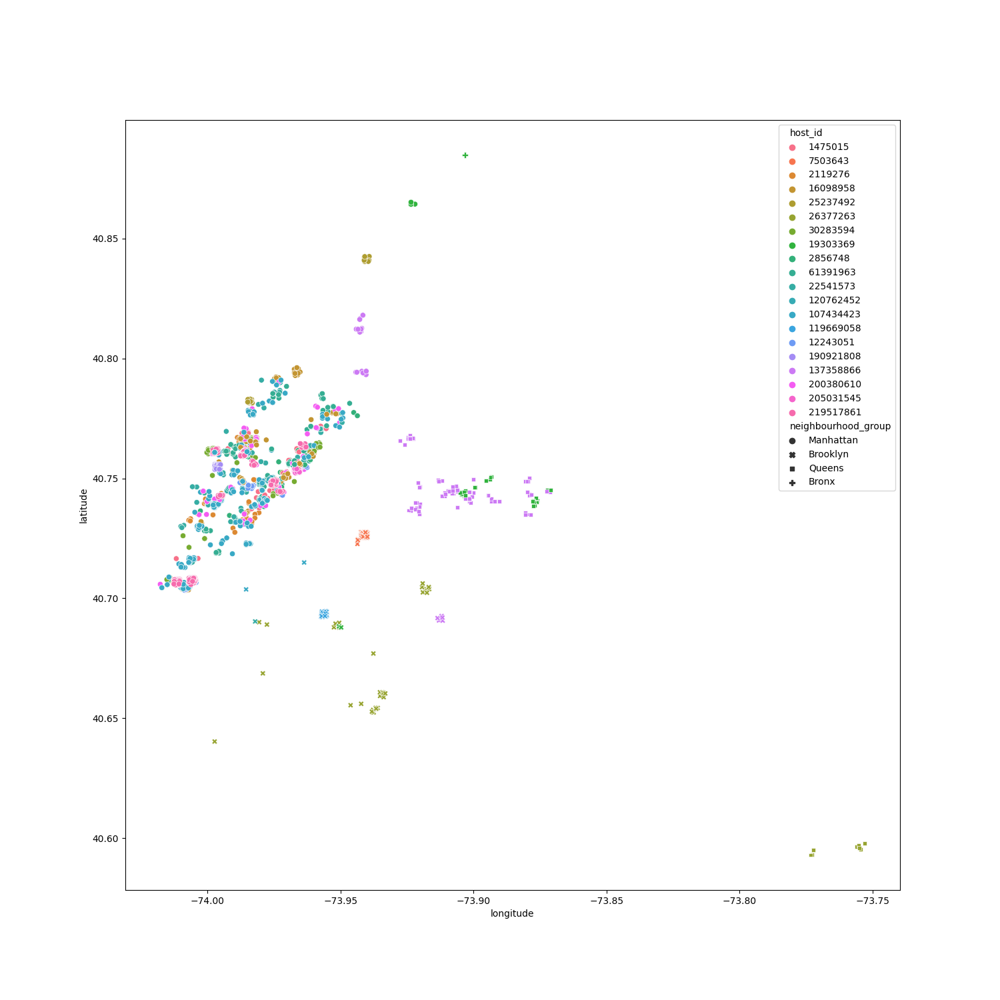
plt.clf() sns.scatterplot(top_hosts_data.longitude,top_hosts_data.latitude,hue=top_hosts_data.price, style=top_hosts_data.neighbourhood_group ) top_host_id_location_price_plot_fname = 'img/top_host_id_location_price_plot.png' plt.savefig(top_host_id_location_price_plot_fname) top_host_id_location_price_plot_fname
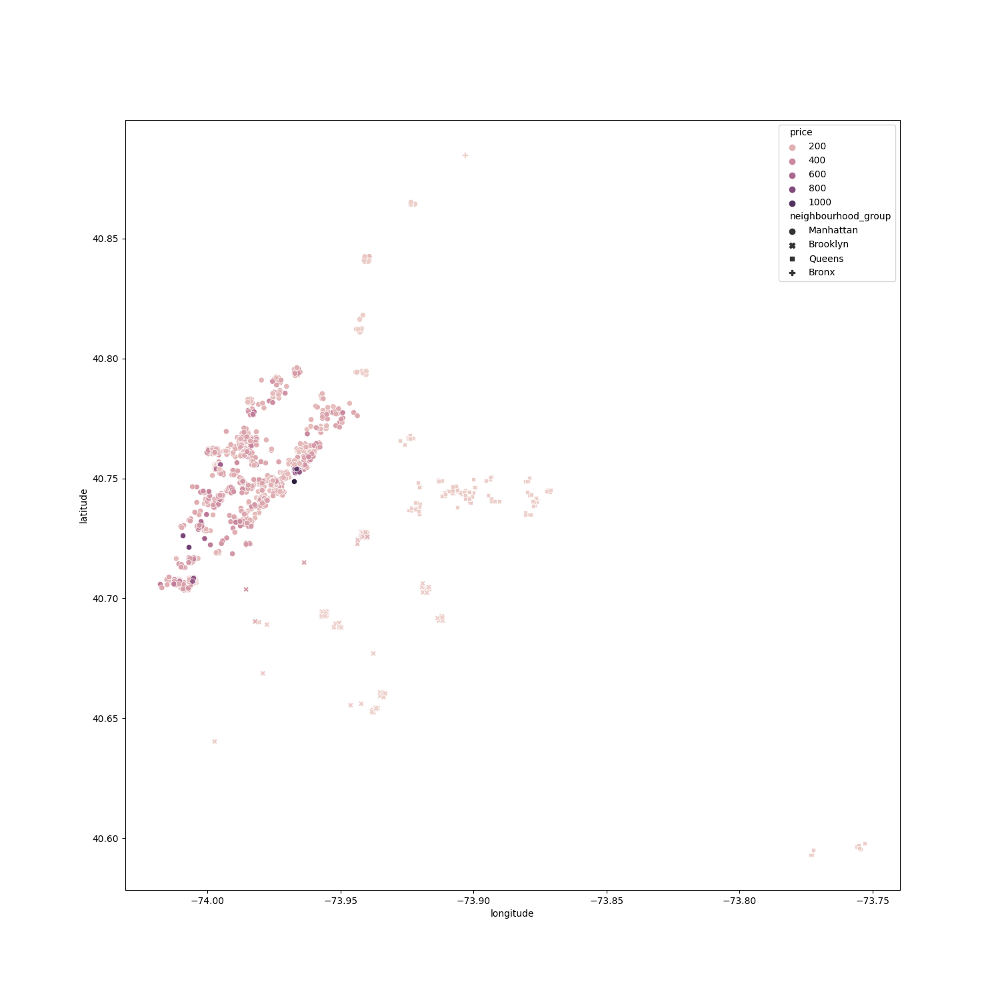
1.10. Comments
most_reviews = data.number_of_reviews.sort_values().tail(20) most_reviews_data = data[data.number_of_reviews.isin(most_reviews)]
plt.clf() sns.scatterplot(most_reviews_data.longitude,most_reviews_data.latitude,hue=most_reviews_data.price, style=most_reviews_data.neighbourhood_group, s=200) most_reviews_data_location_price_plot_fname = 'img/most_reviews_data_location_price_plot.png' plt.savefig(most_reviews_data_location_price_plot_fname) most_reviews_data_location_price_plot_fname
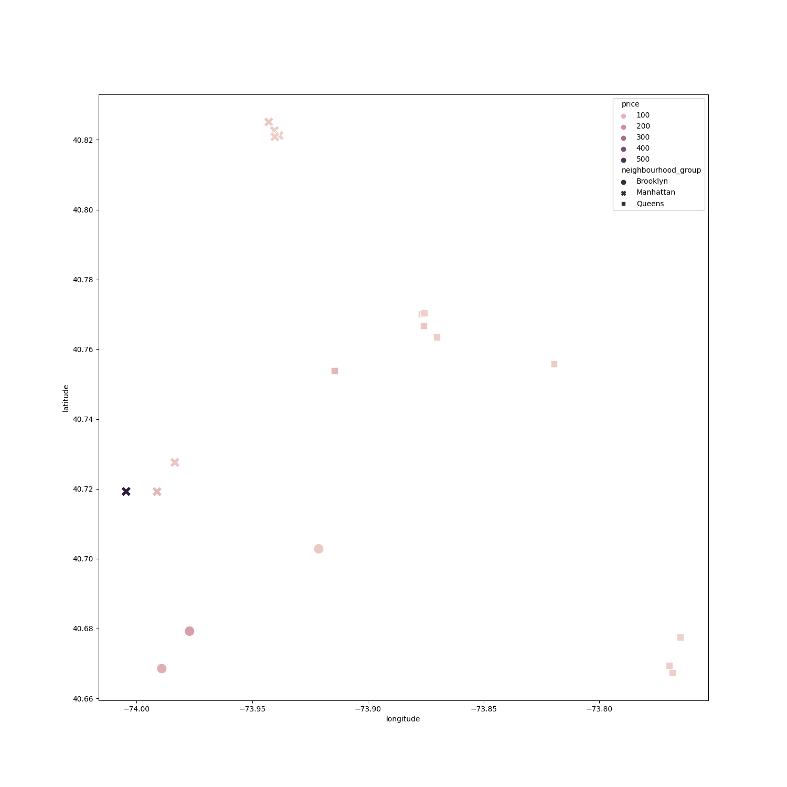
plt.clf() plt.figure(figsize=(10,8)) #loading the png NYC image found on Google and saving to my local folder along with the project i='img/Neighbourhoods_New_York_City_Map.png' nyc_img=plt.imread(i) #scaling the image based on the latitude and longitude max and mins for proper output plt.imshow(nyc_img,zorder=0,extent=[-74.258, -73.7, 40.49,40.92]) ax=plt.gca() #using scatterplot again sns.scatterplot(most_reviews_data.longitude,most_reviews_data.latitude,hue=most_reviews_data.price, ax=ax,style=most_reviews_data.number_of_reviews, s=150 ) most_reviews_location_on_map_plot_fname = 'img/most_reviews_location_on_map_plot.png' plt.savefig(most_reviews_location_on_map_plot_fname) most_reviews_location_on_map_plot_fname
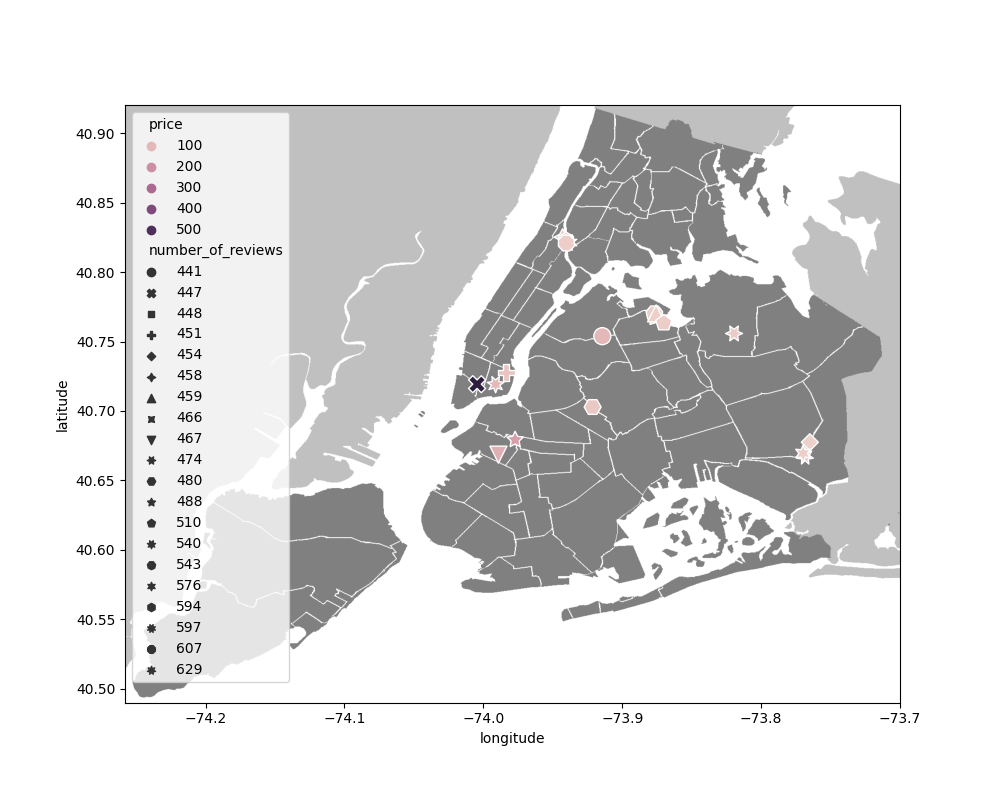
1.11. Hypothesis Tests
1.11.1. Manhattan price distribution is normal
Manhattan = data[data.neighbourhood_group == 'Manhattan'] manhattan_data = Manhattan.price stat, p = shapiro(manhattan_data) print('stat=%.3f, p=%.3f' % (stat, p)) if p > 0.05: print('Probably Gaussian') else: print('Probably not Gaussian')
stat=0.318, p=0.000 Probably not Gaussian
1.11.2. Staten Island price distribution is normal
Staten_Island = data[data.neighbourhood_group == 'Staten Island'] staten_data = Staten_Island.price stat, p = shapiro(staten_data) print('stat=%.3f, p=%.3f' % (stat, p)) if p > 0.05: print('Probably Gaussian') else: print('Probably not Gaussian')
stat=0.182, p=0.000 Probably not Gaussian
1.11.3. top hosts and top host based on reviews are the same
stat, p = pearsonr(top_hosts.index, most_reviews_data.host_id) print('stat=%.3f, p=%.3f' % (stat, p)) if p > 0.05: print('Probably independent') else: print('Probably dependent')
stat=-0.076, p=0.749 Probably independent
1.11.4. People spend same amount of money on Manhattan and Brooklyn
Manhattan = data[data.neighbourhood_group == 'Manhattan'] manhattan = Manhattan.sample(20104) Brooklyn = data[data.neighbourhood_group == 'Brooklyn'] stat, p = pearsonr(manhattan.price, Brooklyn.price) print('stat=%.3f, p=%.3f' % (stat, p)) if p > 0.05: print('Probably independent') else: print('Probably dependent')
stat=0.001, p=0.835 Probably independent
1.11.5. relation between all year availability with price
from scipy.stats import ttest_rel def add_all_year_availability(availability_365): if availability_365 == 365: return 1 return 0 data['All_Year_Availability'] = data.availability_365.apply(add_all_year_availability) print(ttest_rel(data.All_Year_Availability, data.price))
Ttest_relResult(statistic=-140.5996044431853, pvalue=0.0)
1.12. Predict Price
1.12.1. Prepare Data for model
- clean price data
model_data = data[data['price']<= data['price'].mean() + 3*data['price'].std()]
- drop columns that are not necessary for model training
model_data = data.drop(['host_id', 'latitude','longitude','neighbourhood','number_of_reviews','reviews_per_month','name','id','host_name','last_review', 'All_Year_Availability'], axis=1)
- Encode data
def encode(data): for column in data.columns[data.columns.isin(['neighbourhood_group', 'room_type'])]: data[column] = data[column].factorize()[0] return data model_data_encoded = encode(model_data.copy())
1.12.2. spilit data
- set data to X , Y
- we use neighbourhood group room type minimum nights calculated host listings count availability 365 to predict price
x = model_data_encoded.iloc[:,[0,1,3,4,5]] y = model_data_encoded.iloc[:,[2]]
- set data to training and test
x_train,x_test,y_train,y_test=train_test_split(x,y,test_size=.1,random_state=353)
2. Apartment rental offers in Germany
2.1. import libraries
import time import warnings import pandas as pd import numpy as np import matplotlib.pyplot as plt import seaborn as sns from sklearn.linear_model import LinearRegression from sklearn.model_selection import train_test_split from sklearn.metrics import r2_score import multiprocessing as mp import dask import dask.dataframe as dd
2.2. config packages
warnings.filterwarnings("ignore") #pd.set_option("display.max_columns", None) #pd.set_option("display.max_rows", None)
2.3. read data
raw_data = pd.read_csv('immo_data.csv') raw_data.info()
<class 'pandas.core.frame.DataFrame'> RangeIndex: 268850 entries, 0 to 268849 Data columns (total 49 columns): # Column Non-Null Count Dtype --- ------ -------------- ----- 0 regio1 268850 non-null object 1 serviceCharge 261941 non-null float64 2 heatingType 223994 non-null object 3 telekomTvOffer 236231 non-null object 4 telekomHybridUploadSpeed 45020 non-null float64 5 newlyConst 268850 non-null bool 6 balcony 268850 non-null bool 7 picturecount 268850 non-null int64 8 pricetrend 267018 non-null float64 9 telekomUploadSpeed 235492 non-null float64 10 totalRent 228333 non-null float64 11 yearConstructed 211805 non-null float64 12 scoutId 268850 non-null int64 13 noParkSpaces 93052 non-null float64 14 firingTypes 211886 non-null object 15 hasKitchen 268850 non-null bool 16 geo_bln 268850 non-null object 17 cellar 268850 non-null bool 18 yearConstructedRange 211805 non-null float64 19 baseRent 268850 non-null float64 20 houseNumber 197832 non-null object 21 livingSpace 268850 non-null float64 22 geo_krs 268850 non-null object 23 condition 200361 non-null object 24 interiorQual 156185 non-null object 25 petsAllowed 154277 non-null object 26 street 268850 non-null object 27 streetPlain 197837 non-null object 28 lift 268850 non-null bool 29 baseRentRange 268850 non-null int64 30 typeOfFlat 232236 non-null object 31 geo_plz 268850 non-null int64 32 noRooms 268850 non-null float64 33 thermalChar 162344 non-null float64 34 floor 217541 non-null float64 35 numberOfFloors 171118 non-null float64 36 noRoomsRange 268850 non-null int64 37 garden 268850 non-null bool 38 livingSpaceRange 268850 non-null int64 39 regio2 268850 non-null object 40 regio3 268850 non-null object 41 description 249103 non-null object 42 facilities 215926 non-null object 43 heatingCosts 85518 non-null float64 44 energyEfficiencyClass 77787 non-null object 45 lastRefurbish 80711 non-null float64 46 electricityBasePrice 46846 non-null float64 47 electricityKwhPrice 46846 non-null float64 48 date 268850 non-null object dtypes: bool(6), float64(18), int64(6), object(19) memory usage: 89.7+ MB
2.4. handling missing values & cleaning data
2.4.1. null data
print(raw_data.isnull().sum())
regio1 0 serviceCharge 6909 heatingType 44856 telekomTvOffer 32619 telekomHybridUploadSpeed 223830 newlyConst 0 balcony 0 picturecount 0 pricetrend 1832 telekomUploadSpeed 33358 totalRent 40517 yearConstructed 57045 scoutId 0 noParkSpaces 175798 firingTypes 56964 hasKitchen 0 geo_bln 0 cellar 0 yearConstructedRange 57045 baseRent 0 houseNumber 71018 livingSpace 0 geo_krs 0 condition 68489 interiorQual 112665 petsAllowed 114573 street 0 streetPlain 71013 lift 0 baseRentRange 0 typeOfFlat 36614 geo_plz 0 noRooms 0 thermalChar 106506 floor 51309 numberOfFloors 97732 noRoomsRange 0 garden 0 livingSpaceRange 0 regio2 0 regio3 0 description 19747 facilities 52924 heatingCosts 183332 energyEfficiencyClass 191063 lastRefurbish 188139 electricityBasePrice 222004 electricityKwhPrice 222004 date 0 dtype: int64
print(raw_data.isnull().sum()/len(raw_data))
regio1 0.000000 serviceCharge 0.025698 heatingType 0.166844 telekomTvOffer 0.121328 telekomHybridUploadSpeed 0.832546 newlyConst 0.000000 balcony 0.000000 picturecount 0.000000 pricetrend 0.006814 telekomUploadSpeed 0.124077 totalRent 0.150705 yearConstructed 0.212182 scoutId 0.000000 noParkSpaces 0.653889 firingTypes 0.211880 hasKitchen 0.000000 geo_bln 0.000000 cellar 0.000000 yearConstructedRange 0.212182 baseRent 0.000000 houseNumber 0.264155 livingSpace 0.000000 geo_krs 0.000000 condition 0.254748 interiorQual 0.419063 petsAllowed 0.426160 street 0.000000 streetPlain 0.264136 lift 0.000000 baseRentRange 0.000000 typeOfFlat 0.136187 geo_plz 0.000000 noRooms 0.000000 thermalChar 0.396154 floor 0.190846 numberOfFloors 0.363519 noRoomsRange 0.000000 garden 0.000000 livingSpaceRange 0.000000 regio2 0.000000 regio3 0.000000 description 0.073450 facilities 0.196853 heatingCosts 0.681912 energyEfficiencyClass 0.710668 lastRefurbish 0.699792 electricityBasePrice 0.825754 electricityKwhPrice 0.825754 date 0.000000 dtype: float64
2.4.2. delete columns with more than %50 missing values
raw_data = raw_data.drop(columns=raw_data.columns[((raw_data.isnull().sum()/len(raw_data)) > 0.50)]) raw_data.columns
Index(['regio1', 'serviceCharge', 'heatingType', 'telekomTvOffer',
'newlyConst', 'balcony', 'picturecount', 'pricetrend',
'telekomUploadSpeed', 'totalRent', 'yearConstructed', 'scoutId',
'firingTypes', 'hasKitchen', 'geo_bln', 'cellar',
'yearConstructedRange', 'baseRent', 'houseNumber', 'livingSpace',
'geo_krs', 'condition', 'interiorQual', 'petsAllowed', 'street',
'streetPlain', 'lift', 'baseRentRange', 'typeOfFlat', 'geo_plz',
'noRooms', 'thermalChar', 'floor', 'numberOfFloors', 'noRoomsRange',
'garden', 'livingSpaceRange', 'regio2', 'regio3', 'description',
'facilities', 'date'],
dtype='object')
2.4.3. delete columns that are not usefull
raw_data = raw_data.drop(columns=['livingSpaceRange','street','description','facilities','geo_krs','geo_plz','scoutId','regio1','telekomUploadSpeed','telekomTvOffer','pricetrend','regio3','noRoomsRange','picturecount','geo_bln','date','houseNumber','streetPlain','firingTypes','yearConstructedRange'])
raw_data.info()
<class 'pandas.core.frame.DataFrame'> RangeIndex: 268850 entries, 0 to 268849 Data columns (total 22 columns): # Column Non-Null Count Dtype --- ------ -------------- ----- 0 serviceCharge 261941 non-null float64 1 heatingType 223994 non-null object 2 newlyConst 268850 non-null bool 3 balcony 268850 non-null bool 4 totalRent 228333 non-null float64 5 yearConstructed 211805 non-null float64 6 hasKitchen 268850 non-null bool 7 cellar 268850 non-null bool 8 baseRent 268850 non-null float64 9 livingSpace 268850 non-null float64 10 condition 200361 non-null object 11 interiorQual 156185 non-null object 12 petsAllowed 154277 non-null object 13 lift 268850 non-null bool 14 baseRentRange 268850 non-null int64 15 typeOfFlat 232236 non-null object 16 noRooms 268850 non-null float64 17 thermalChar 162344 non-null float64 18 floor 217541 non-null float64 19 numberOfFloors 171118 non-null float64 20 garden 268850 non-null bool 21 regio2 268850 non-null object dtypes: bool(6), float64(9), int64(1), object(6) memory usage: 34.4+ MB
2.4.4. delete unusal data
- livingspace
unusal_livingspace_data = raw_data[raw_data.livingSpace == 0] raw_data.drop(unusal_livingspace_data.index,axis=0, inplace=True)
- totalrent
unusal_totalrent_data = raw_data[raw_data.totalRent == 0] raw_data.drop(unusal_totalrent_data.index,axis=0, inplace=True)
- baseRent
unusal_baseRent_data = raw_data[raw_data.baseRent == 0] raw_data.drop(unusal_baseRent_data.index,axis=0, inplace=True)
2.4.5. fill numeric data with mean
data = raw_data.fillna(raw_data._get_numeric_data().mean()) print(data.isnull().sum())
serviceCharge 0 heatingType 44809 newlyConst 0 balcony 0 totalRent 0 yearConstructed 0 hasKitchen 0 cellar 0 baseRent 0 livingSpace 0 condition 68310 interiorQual 112441 petsAllowed 114369 lift 0 baseRentRange 0 typeOfFlat 36585 noRooms 0 thermalChar 0 floor 0 numberOfFloors 0 garden 0 regio2 0 dtype: int64
2.4.6. categorical data with lots of states
def get_categorical_data(data): categorical_cols = [] for col in data.columns: if data[col].dtype == 'object' or data[col].dtype == 'bool': categorical_cols.append(col) print(f'col : {col} , unique values : {data[col].nunique()}') return categorical_cols get_categorical_data(data) def get_crowded_categorical_data_columns(data): list_of_crowded_cols = [] for col in data.columns: if data[col].dtype == 'object' or data[col].dtype == 'bool': if data[col].nunique() > 5: list_of_crowded_cols.append(col) return list_of_crowded_cols
col : heatingType , unique values : 13 col : newlyConst , unique values : 2 col : balcony , unique values : 2 col : hasKitchen , unique values : 2 col : cellar , unique values : 2 col : condition , unique values : 10 col : interiorQual , unique values : 4 col : petsAllowed , unique values : 3 col : lift , unique values : 2 col : typeOfFlat , unique values : 10 col : garden , unique values : 2 col : regio2 , unique values : 419
2.4.7. fill categorical data with other
categorical_cols = get_categorical_data(data) crowded_cols = get_crowded_categorical_data_columns(data) print(cols)
for col in categorical_cols: data[col].fillna("other", inplace=True)
print(data.isnull().sum())
serviceCharge 0 heatingType 0 newlyConst 0 balcony 0 totalRent 0 yearConstructed 0 hasKitchen 0 cellar 0 baseRent 0 livingSpace 0 condition 0 interiorQual 0 petsAllowed 0 lift 0 baseRentRange 0 typeOfFlat 0 noRooms 0 thermalChar 0 floor 0 numberOfFloors 0 garden 0 regio2 0 dtype: int64
2.4.8. reduce number of categories
get_categorical_data(data) crowded_cols = get_crowded_categorical_data_columns(data) print(crowded_cols)
col : heatingType , unique values : 14 col : newlyConst , unique values : 2 col : balcony , unique values : 2 col : hasKitchen , unique values : 2 col : cellar , unique values : 2 col : condition , unique values : 11 col : interiorQual , unique values : 5 col : petsAllowed , unique values : 4 col : lift , unique values : 2 col : typeOfFlat , unique values : 10 col : garden , unique values : 2 col : regio2 , unique values : 419 ['heatingType', 'condition', 'typeOfFlat', 'regio2']
- reduce category func
def reduce_category(cat): if cat in change_to_other: return 'other' return cat
- heatingType
print(data.heatingType.value_counts()/len(data.heatingType)*100)
central_heating 47.956569 other 16.690505 district_heating 9.233061 gas_heating 7.428763 self_contained_central_heating 7.094647 floor_heating 6.587328 oil_heating 1.876932 heat_pump 1.017618 combined_heat_and_power_plant 0.736395 night_storage_heater 0.496517 wood_pellet_heating 0.357954 electric_heating 0.334861 stove_heating 0.127016 solar_heating 0.061832 Name: heatingType, dtype: float64
change_to_other = data.heatingType.value_counts().tail().index data.heatingType = data.heatingType.apply(reduce_category)
- condition
print(data.condition.value_counts()/len(data.condition)*100)
other 25.444184 well_kept 24.772228 refurbished 10.040600 fully_renovated 9.811897 first_time_use 8.172980 mint_condition 8.164041 modernized 6.408910 first_time_use_after_refurbishment 5.839759 negotiable 0.833985 need_of_renovation 0.509927 ripe_for_demolition 0.001490 Name: condition, dtype: float64
change_to_other = data.condition.value_counts().tail(3).index data.condition = data.condition.apply(reduce_category)
- typeOfFlat
print(data.typeOfFlat.value_counts()/len(data.typeOfFlat)*100)
apartment 48.920177 other 17.160577 roof_storey 12.935524 ground_floor 11.726450 maisonette 3.468916 raised_ground_floor 2.095206 penthouse 1.328268 terraced_flat 1.260476 half_basement 0.748687 loft 0.355719 Name: typeOfFlat, dtype: float64
change_to_other = data.typeOfFlat.value_counts().tail(2).index data.typeOfFlat = data.condition.apply(reduce_category)
apartment 48.920216 other 17.159383 roof_storey 12.939185 ground_floor 11.730705 maisonette 3.466245 raised_ground_floor 2.093361 penthouse 1.327134 terraced_flat 1.259066 half_basement 0.748745 loft 0.355961 Name: typeOfFlat, dtype: float64
- regio2
print(data.regio2.value_counts()/len(data.regio2)*100)
Leipzig 5.110441 Chemnitz 4.680597 Berlin 3.874921 Dresden 2.800685 Magdeburg 1.809886 ... Lichtenfels_Kreis 0.011547 Freyung_Grafenau_Kreis 0.011174 Haßberge_Kreis 0.008940 Neustadt_a.d._Waldnaab_Kreis 0.005960 Kronach_Kreis 0.004470 Name: regio2, Length: 419, dtype: float64change_to_other = data.regio2.value_counts().tail(399).index data.regio2 = data.regio2.apply(reduce_category)
other 45.760089 Leipzig 5.104333 Chemnitz 4.677329 Berlin 3.870560 Dresden 2.797843 Magdeburg 1.807699 Halle_Saale 1.697973 München 1.630277 Essen 1.618375 Frankfurt_am_Main 1.597917 Hamburg 1.398177 Düsseldorf 1.380324 Duisburg 1.310024 Mittelsachsen_Kreis 1.176121 Dortmund 1.166822 Gelsenkirchen 1.094662 Recklinghausen_Kreis 1.024363 Köln 1.007625 Zwickau 0.943277 Wuppertal 0.883764 Zwickau_Kreis 0.863307 Leipzig_Kreis 0.861819 Meißen_Kreis 0.822020 Sächsische_Schweiz_Osterzgebirge_Kreis 0.772922 Bochum 0.746513 Bremen 0.735354 Gera 0.734238 Plauen 0.733123 Aachen 0.702622 Erzgebirgskreis 0.683653 Nürnberg 0.666543 Stuttgart 0.665055 Hannover 0.643853 Wiesbaden 0.631951 Saalekreis 0.621536 Märkischer_Kreis 0.576902 Bautzen_Kreis 0.572810 Mettmann_Kreis 0.555700 Burgenlandkreis 0.554212 Hagen 0.534499 Ennepe_Ruhr_Kreis 0.519993 Mannheim 0.513297 Mönchengladbach 0.509206 Krefeld 0.499163 Bonn 0.491352 Harz_Kreis 0.483541 Dessau_Roßlau 0.473498 Erfurt 0.445974 Rhein_Sieg_Kreis 0.437791 Name: regio2, dtype: float64
2.5. Clean duplicates
2.5.1. remove duplicates
- remove duplicates from dataset
data.drop_duplicates(inplace=True)
2.6. Handle Outliers
for col in data.columns: if data[col].dtype == 'int64' or data[col].dtype == 'float64': upper_range = data[col].mean() + 3 * data[col].std() lower_range = data[col].mean() - 3 * data[col].std() indexs = data[(data[col] > upper_range) | (data[col] < lower_range)].index data = data.drop(indexs)
2.7. Visual data
2.7.1. regio2 top 13
print(data.regio2.value_counts()/len(data)*100) regio2_data = data.regio2.value_counts()
other 63.127229 Leipzig 5.104062 Chemnitz 4.599483 Berlin 3.871552 Dresden 2.793639 Magdeburg 1.813224 Halle_Saale 1.671833 München 1.656295 Essen 1.615121 Frankfurt_am_Main 1.549475 Hamburg 1.395654 Düsseldorf 1.393324 Duisburg 1.301264 Dortmund 1.178906 Mittelsachsen_Kreis 1.150939 Gelsenkirchen 1.070921 Köln 1.013044 Recklinghausen_Kreis 1.011878 Zwickau 0.943513 Wuppertal 0.895347 Leipzig_Kreis 0.843297 Name: regio2, dtype: float64
plt.clf() plt.figure(figsize=(15,15)) sns.barplot(x=regio2_data.index[1:14], y=regio2_data.values[1:14]) regio2_plot_fname = 'img/regio2_plot.png' plt.savefig(regio2_plot_fname) regio2_plot_fname
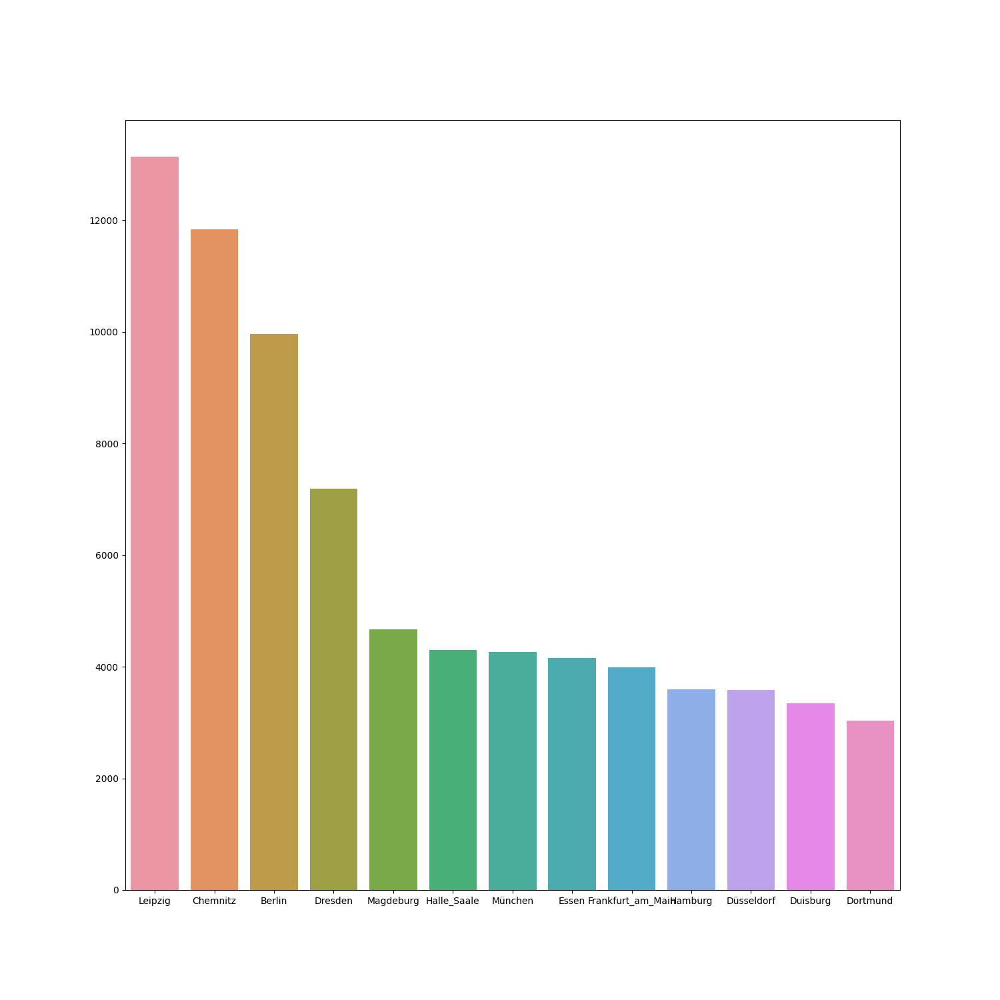
2.7.2. livingSpace
print(data.livingSpace.value_counts())
60.00 4979
70.00 4008
80.00 3892
65.00 3653
75.00 3572
...
140.05 1
128.60 1
166.70 1
128.43 1
158.35 1
Name: livingSpace, Length: 12907, dtype: int64
plt.clf() livingSpace_chart_data = data.livingSpace.value_counts() plt.scatter(x=livingSpace_chart_data.index, y=livingSpace_chart_data.values) plt.xlabel('livingSpace') plt.ylabel('number') livingSpace_plot_fname = 'img/livingSpace_plot.png' plt.savefig(livingSpace_plot_fname) livingSpace_plot_fname
2.7.3. baseRent
print(data.baseRent.value_counts()/len(data)*100)
350.00 1.404200
450.00 1.334670
300.00 1.168807
400.00 1.126079
650.00 1.089566
...
400.44 0.000388
2749.00 0.000388
857.85 0.000388
412.40 0.000388
1255.38 0.000388
Name: baseRent, Length: 26256, dtype: float64
- yearConstructed
plt.clf() plt.scatter(x = data.baseRent, y = data.yearConstructed) plt.xlabel = 'baseRent' plt.ylabel = 'YearConstructed' baseRent_and_yearConstructed_plot_fname = 'img/baseRent_and_yearConstructed_plot.png' plt.savefig(baseRent_and_yearConstructed_plot_fname) baseRent_and_yearConstructed_plot_fname
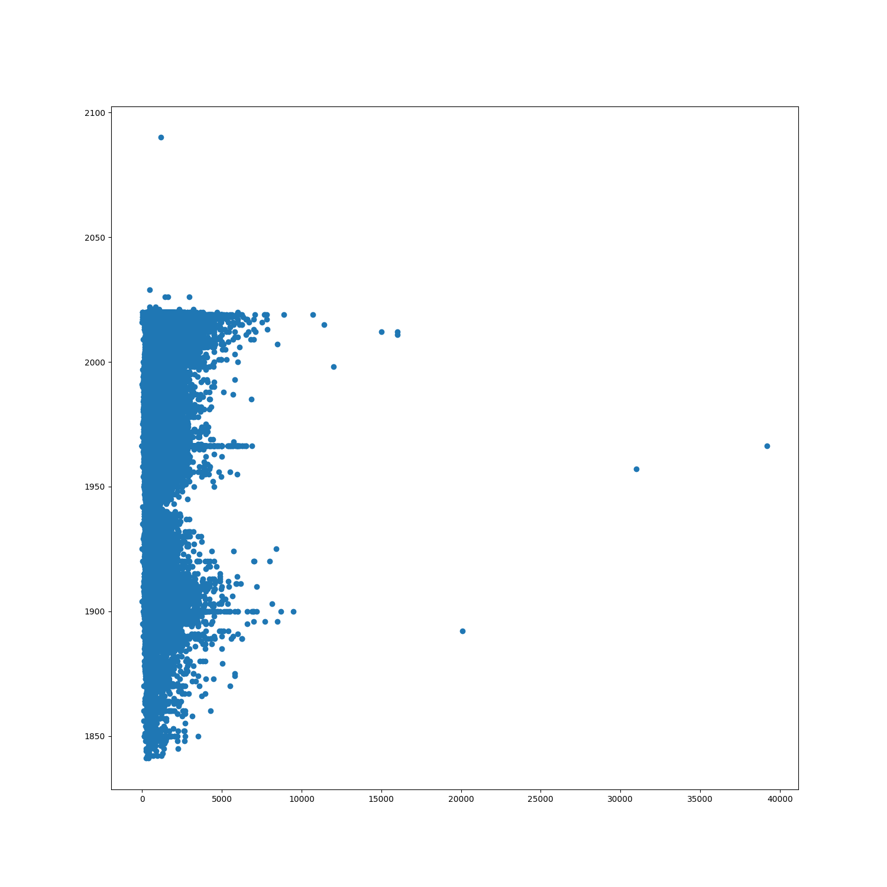
- regio2
lower_mask_baseR = (data.baseRent > 10) upper_mask_baseR = (data.baseRent < 2000) baseR_mask = lower_mask_baseR & upper_mask_baseR baseR_data = data[baseR_mask]
plt.clf() plt.figure(figsize=(10,10)) plt.scatter(x = baseR_data.baseRent, y = baseR_data.regio2) plt.xlabel = 'baseRent' plt.ylabel = 'regio2' baseRent_and_regio2_plot_fname = 'img/baseRent_and_regio2_plot.png' plt.savefig(baseRent_and_regio2_plot_fname) baseRent_and_regio2_plot_fname
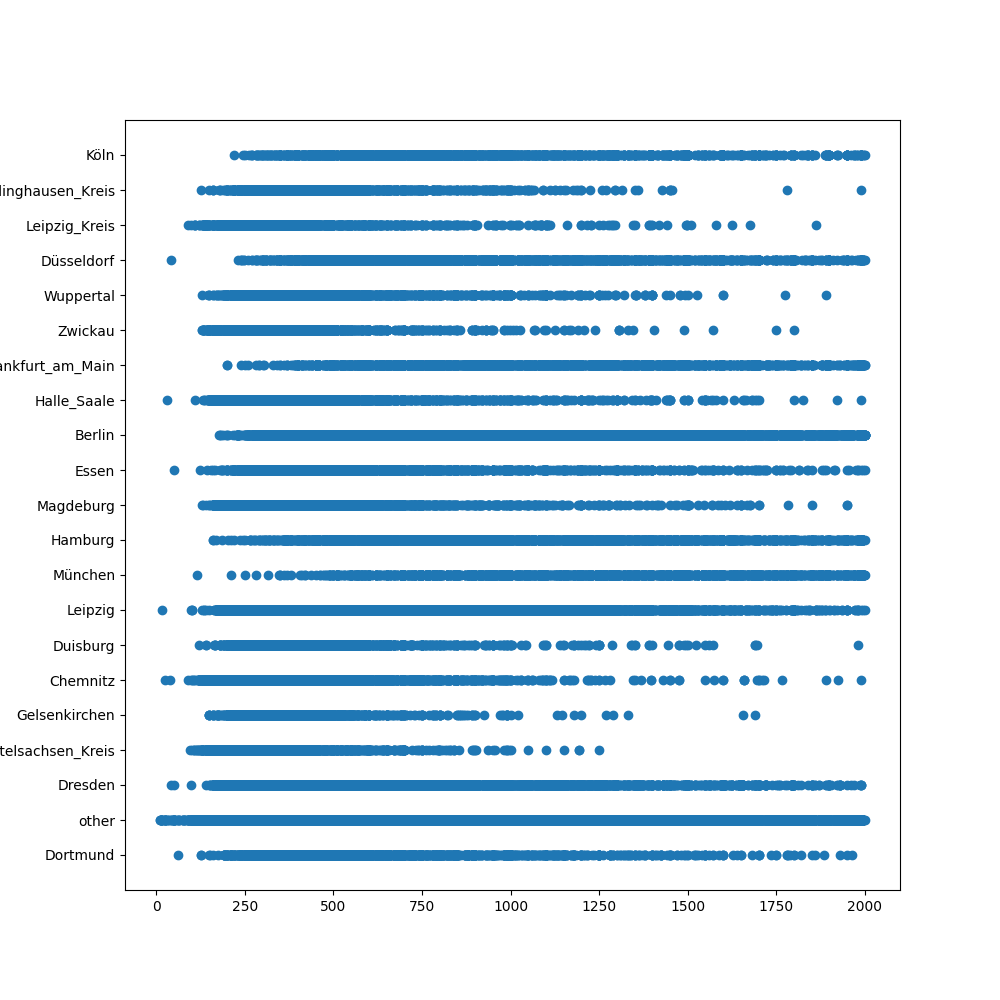
2.7.4. houses
- typeOfFlat & yearConstructed
plt.clf() sns.catplot(x="typeOfFlat", y="yearConstructed", hue="baseRentRange",kind='swarm', data=data.sample(4000),aspect=17.5/17.5,height=18) houses_with_typeOfFlat_n_yearConstructed_baseRentRange_plot_fname = 'img/houses_with_typeOfFlat_n_yearConstructed_baseRentRange.png' plt.savefig(houses_with_typeOfFlat_n_yearConstructed_baseRentRange_plot_fname) houses_with_typeOfFlat_n_yearConstructed_baseRentRange_plot_fname
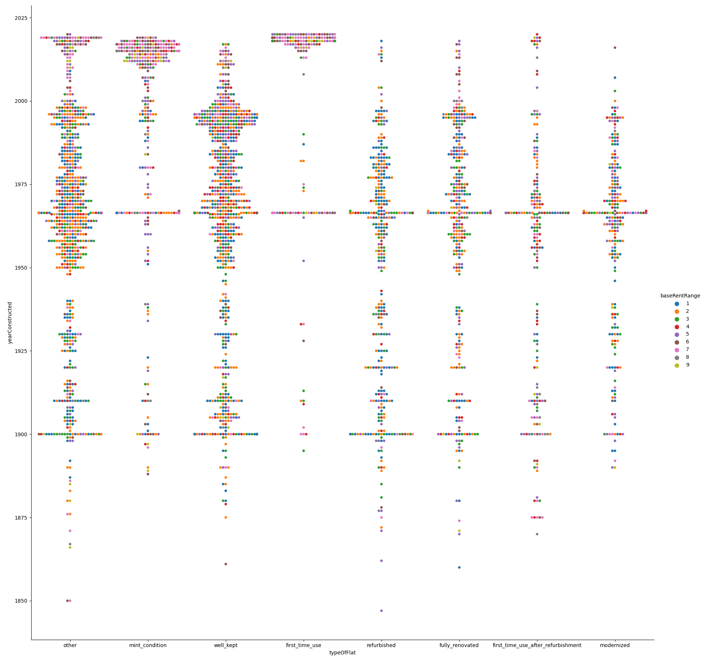
sns.catplot(x="color", y="price", kind="boxen", data=data)
- heatingType & livingSpace
plt.clf() sns.catplot(x="heatingType", y="livingSpace", hue="baseRentRange",kind='swarm', data=data.sample(4000),aspect=17.5/17.5,height=18) houses_with_heatingType_n_livingSpace_baseRentRange_plot_fname = 'img/houses_with_heatingType_n_livingSpace_baseRentRange.png' plt.savefig(houses_with_heatingType_n_livingSpace_baseRentRange_plot_fname) houses_with_heatingType_n_livingSpace_baseRentRange_plot_fname
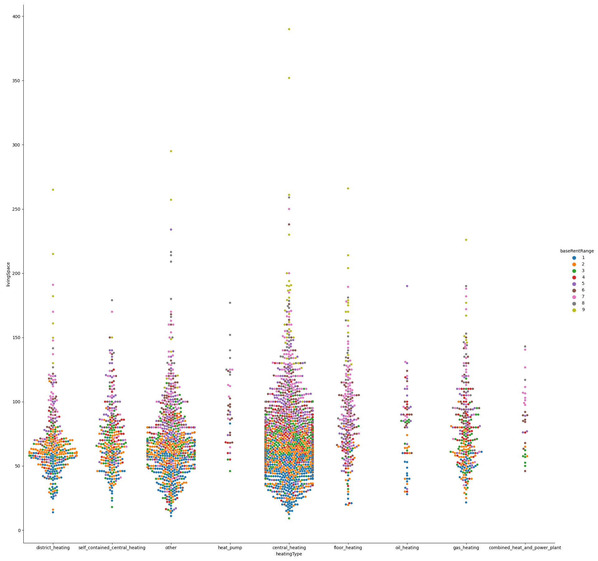
2.8. Models
2.8.1. prepare data for model
- select feature
print(data.columns)Index(['serviceCharge', 'heatingType', 'newlyConst', 'balcony', 'totalRent', 'yearConstructed', 'hasKitchen', 'cellar', 'baseRent', 'livingSpace', 'condition', 'interiorQual', 'petsAllowed', 'lift', 'baseRentRange', 'typeOfFlat', 'noRooms', 'thermalChar', 'floor', 'numberOfFloors', 'garden', 'regio2'], dtype='object')model_data_1 = data[[ 'yearConstructed' ,'serviceCharge','heatingType', 'balcony', 'hasKitchen', 'livingSpace', 'baseRent']] model_data_2 = data[[ 'yearConstructed' ,'noRooms','heatingType', 'cellar', 'hasKitchen', 'numberOfFloors', 'baseRent']] model_data_3 = data[[ 'yearConstructed' ,'noRooms','interiorQual', 'condition', 'hasKitchen', 'livingSpace', 'baseRent']] model_data_4 = data[[ 'garden' ,'floor','typeOfFlat', 'cellar', 'hasKitchen', 'numberOfFloors', 'baseRent']]
- encode data
column_to_encode = get_categorical_data(data) def encode(data): for column in data.columns[data.columns.isin(column_to_encode)]: data[column] = data[column].factorize()[0] return data model_data_1_encoded = encode(model_data_1.copy()) model_data_2_encoded = encode(model_data_2.copy()) model_data_3_encoded = encode(model_data_3.copy()) model_data_4_encoded = encode(model_data_4.copy())
2.8.2. split data and model
def model_trainer(data): x = data.iloc[:,[0,1,2,3,4,5]] y = data.iloc[:,[6]] x_train,x_test,y_train,y_test=train_test_split(x,y,test_size=.2,random_state=500 ) linear_model = LinearRegression() linear_model.fit(x_train,y_train) y_pred = linear_model.predict(x_test) print(r2_score(y_test,y_pred)) return (y_test, y_pred) data1 = model_trainer(model_data_1_encoded) data2 = model_trainer(model_data_2_encoded) data3 = model_trainer(model_data_3_encoded) data4 = model_trainer(model_data_4_encoded)
0.5404128121895404 0.2856885743825939 0.5387703899065475 0.0787720846257648
2.9. Multiprocessing
- use multiprocessing to get outliers indexes
def detect_outlier_and_drop(data): indexs = [] if data.dtype == 'int64' or data.dtype == 'float64': upper_range = data.mean() + 3 * data.std() lower_range = data.mean() - 3 * data.std() indexs = data[(data > upper_range) | (data < lower_range)].index return indexs
s_time = time.time() clean_list = list(map(detect_outlier_and_drop, [(raw_data[col]) for col in raw_data._get_numeric_data().columns])) print(f'run time : {time.time() - s_time}')
run time : 0.07304620742797852
s_time = time.time() with mp.Pool(mp.cpu_count()) as p: clean_data_from_p = list(p.imap(detect_outlier_and_drop,[raw_data[col] for col in raw_data._get_numeric_data().columns] )) print(f'run time : {time.time() - s_time}')
run time : 0.47928476333618164